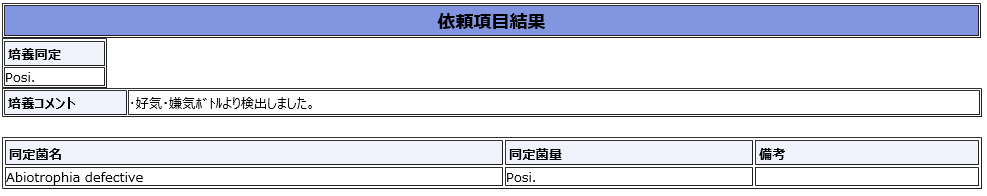

グラム染色 像 撮影：ICU関谷

分類・特徴
かつて栄養要求性連鎖球菌（NVS, Nutritionally Variant Streptococci）として知られていたグラム陽性球菌。自動血液培養システムで検出可能だが、グラム染色では多形性を示し、通常の培地では発育しない[1][2][3]。
抗菌薬選択
※ 灰色表示の抗菌薬は日本未発売のため、原則として保険診療では使用不可。
経験的治療（感受性結果待ち）
- バンコマイシン ± ゲンタマイシン
ペニシリン非感受性は A. defectiva 66.7%・Granulicatella 53.7% と高頻度のため、感受性判明前は VCM ベースで開始し、感受性結果に基づき de-escalation。培養が困難で感受性試験が遅れる／不正確な可能性も念頭に置く。
ペニシリン感受性株（MIC ≤0.12 µg/mL） — AHA 推奨[1]
- アンピシリン 12 g/日 ＋ ゲンタマイシン 3 mg/kg/日（自己弁・人工弁とも 6 週間、GM は最初の 2 週間）
または ペニシリンG 18-30 百万単位/日 ＋ ゲンタマイシン。VGS IE よりも治癒困難で再発しやすいため併用必須[1]。
ペニシリン耐性株／不耐性
- バンコマイシン（自己弁・人工弁とも 6 週間）
動物モデルでは GM 追加不要だが、ヒトでの併用エビデンスは限定的。重症例や人工弁では GM 併用を考慮[1]。
ペニシリン耐性株（MIC ≥0.5 µg/mL）でセフトリアキソン感受性[1]
- セフトリアキソン ＋ ゲンタマイシン（代替）[1]
菌種別感受性傾向[1][2][10]
- バンコマイシン：両菌種 100% 感受性[2]
- レボフロキサシン：両菌種 94-100% 感受性[2]
- セフトリアキソン：A. defectiva 92-100% 感受性 ／ G. adiacens 22-43%[10]
- ペニシリン：G. adiacens 34-39% 感受性 ／ A. defectiva 11-24%[10]
- メロペネム：G. adiacens 87% ／ A. defectiva 72%[10]
- ダプトマイシン：MIC90 ≥4 µg/mL と高値（推奨されない）[2]
注意点
出典
- Baddour LM, et al. Infective Endocarditis in Adults: AHA Statement. Circulation 2015;132(15):1435-86.
- Alberti MO, Hindler JA, Humphries RM. Antimicrobial Susceptibilities of Abiotrophia Defectiva, Granulicatella Adiacens, and Granulicatella Elegans. Antimicrob Agents Chemother 2015;60(3):1411-20.
- Cargill JS, et al. Granulicatella Infection: Diagnosis and Management. J Med Microbiol 2012;61(Pt 6):755-761.
- Christensen JJ, Facklam RR. Granulicatella and Abiotrophia Species From Human Clinical Specimens. J Clin Microbiol 2001;39(10):3520-3.
- Chesdachai S, et al. Contemporary Experience of Abiotrophia, Granulicatella and Gemella Bacteremia. J Infect 2022;84(4):511-517.
- Ratcliffe P, et al. Comparison of MALDI-TOF MS and VITEK 2 System for Granulicatella and Abiotrophia. Diagn Microbiol Infect Dis 2013;77(3):216-9.
- Téllez A, et al. Epidemiology, Clinical Features, and Outcome of IE Due to Abiotrophia and Granulicatella Species: 76 Cases, 2000-2015. Clin Infect Dis 2018;66(1):104-111.
- Cai S, et al. Epidemiology, Clinical Characteristics, and Outcome of IE Due to Abiotrophia and Granulicatella in a Tertiary Hospital in China, 2015-2023. BMC Infect Dis 2024;24(1):1022.
- Seguiti C, et al. Abiotrophia Defectiva and Granulicatella: Literature Review on PJI and Case Report. Microorganisms 2025;13(5):1113.
- Mushtaq A, et al. Differential Antimicrobial Susceptibilities of Granulicatella Adiacens and Abiotrophia Defectiva. Antimicrob Agents Chemother 2016;60(8):5036-9.